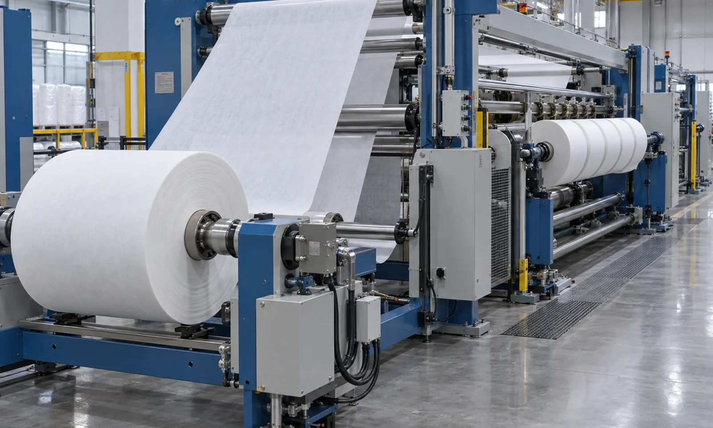
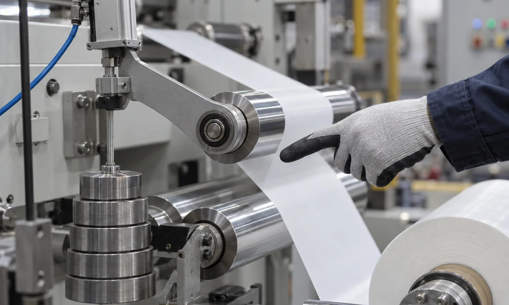

Published September 20, 2026 | By HDPTH Technical Editorial Team

Buyers often specify tension as a single number, as though one setpoint could apply from the parent roll to the finished slit roll. It cannot. Tension that is correct at the unwind is usually wrong at the knives, and tension that gives a clean slit rarely builds a stable roll. A slitter rewinder is a chain of zones, and output quality depends less on the nominal setpoint than on whether each zone holds its own tension while the machine accelerates, splices and changes diameter.
What a tension zone actually is
A tension zone is a length of web path in which one actuator controls tension against one reference. The boundaries are physical, not conceptual — a nip, an S-wrap or a dancer that absorbs the difference between the speed of the web entering and leaving. A typical machine has three:
- Unwind zone: from the parent roll to the first isolating point. Its job is to deliver web at constant tension regardless of falling diameter and changing inertia. Brake sizing, diameter ratio and inertia compensation belong here; see braked versus driven unwind.
- Pull or metering zone: through the slitting station. This zone sets the speed reference for the whole machine and must hold the web flat and still while the knives cut it. It is where slit width tolerance is really determined.
- Rewind zone: from the last isolating point to the finished roll. Here tension becomes torque and the roll is built, so taper, nip load and lay-on pressure dominate finished quality.
Why isolation matters more than setpoint
Without isolation, a tension event anywhere propagates everywhere: a splice at the unwind becomes a tension spike at the knives, which becomes a short length of off-width material wound into a finished roll. Isolation absorbs such events locally — the nip or S-wrap upstream of the slitting station takes the disturbance on its own drive and passes a steady web forward. The acceptance test is simple: disturb one zone deliberately and confirm the adjacent zone holds its setpoint. Machines without isolation fail immediately, and the failure appears in the finished roll as telescoping, starring or soft edges.
Roller layout: the mechanical half of the specification
Control hardware cannot compensate for a poor web path. Wrap angle determines whether a driven roller drives the web or merely follows it; free-span length determines whether an extensible nonwoven sags or wrinkles between supports; idler balance determines whether speed introduces vibration that reads as tension noise. These are mechanical decisions with control consequences and belong in the specification alongside the drive list — the same reasoning as idler roller selection and the choice of a bowed spreader roll where the web must be opened before the knives.
| Zone or feature | What goes wrong | What to define in writing |
|---|---|---|
| Unwind actuation | Tension loss during deceleration or at small core diameter | Braked or driven, diameter ratio, inertia compensation |
| Isolating nip | Disturbances pass between zones | Driven nip or S-wrap, wrap angle, roll covering, nip load |
| Slitting zone support | Web movement produces off-width slit | Free-span limits, backing roll condition, alignment |
| Web guiding | Lateral drift before the knives | Guide type and position, sensor range; see web guiding |
| Rewind torque and taper | Hard core, soft outer wraps, telescoping | Taper start, end and curve shape; torque limit |
| Lay-on roller | Air entrapment and roll hardness variation | Nip pressure profile across diameter; see lay-on pressure |
Specifying each zone in the purchase document
Write the specification as a table of zones, each with its own setpoint range, actuator type, isolation method and accepted deviation band. For the unwind, state roll diameter range and whether tension must be held during acceleration, not only at steady state. For the pull zone, state the stability required through the knives and the maximum free span permitted. For the rewind, give the taper curve and the target roll hardness across the diameter, and confirm whether differential rewind shafts are needed when slit widths vary within one set. Tie the specification to measurable output rather than to component brands: the machine must hold ±X percent of setpoint in each zone through a defined cycle, demonstrated with a recorded trace at factory acceptance.

Specifying a new slitter rewinder?
Send HDPTH your material, width range, roll diameters, speed profile and finished roll quality targets. We will propose a zone-by-zone tension architecture and state the deviation bands we will demonstrate at acceptance.
Submit Your Project InquiryQuestions to put to every supplier
- Where are the isolation points, and what physically absorbs a tension disturbance between zones?
- What wrap angle does each driven roller have, and what is the longest free span in the web path?
- What is the tension deviation band in each zone during acceleration?
- Is the unwind braked or driven, and why for this material?
- What taper curve is proposed, and can it be demonstrated on our material to full diameter?
- Will tension be recorded and shown as a trace during factory acceptance?
Refining the rest of the specification?
Continue with our guides to load cell versus dancer tension control, taper tension and rewind torque control.
Contact HDPTHFrequently asked questions
How many tension zones should a slitter rewinder have?
Three, as a practical minimum: unwind, a pull or metering zone at the slitting station, and rewind. Each zone has its own tension setpoint and its own actuator, and each is separated from the next by an isolation point — normally a driven nip roll or an S-wrap — so a disturbance in one zone does not travel into the others. Machines that try to hold one tension from unwind to rewind without isolation tend to telescope or slit off-width as soon as diameter or speed changes.
What tension taper should I specify for the rewind zone?
Specify taper as a curve, not a single number: a start tension at core, an end tension at finished diameter, and the shape between them, usually linear between roughly 30 and 60 percent of the core tension. Very extensible nonwovens need a steeper taper than film or paper, and soft rolls with a low hardness target need lower tension throughout. Ask for a run on your material to full diameter, because taper that looks right on a small roll often over-tensions the outer wraps of a large one.
Should the unwind be braked or driven?
Braked unwind is adequate for stable, heavy webs at moderate speed where tension requirements are loose. A driven unwind is justified for extensible or delicate nonwovens, very low tension targets, large roll diameter ratios, and wherever tension stability during acceleration matters more than capital cost. See our comparison of braked versus driven unwind: the deciding factor is whether the unwind holds setpoint while decelerating, when a brake alone tends to slacken the web.
How much wrap angle is enough on a driven roller?
As a working rule, 30 degrees of wrap is the point at which a driven roller begins to transmit torque reliably on a smooth surface, and 90 to 180 degrees is typical on the main pull and metering rolls. Below roughly 20 degrees the roller follows the web rather than driving it, and tension control authority collapses. Where layout limits wrap, add an idler on the outgoing side rather than accepting a marginal angle, and keep free spans short enough that an extensible web cannot sag or flutter.
What should I verify about tension at factory acceptance?
Do not accept a tension system on the basis that rolls look acceptable. Require a recorded trace of actual tension in each zone across a full production cycle: acceleration to maximum speed, steady running, deceleration, splice, and one roll change at each end. Ask for the deviation band at each stage as a percentage of setpoint and compare it with the specification. A five-minute stable run at one speed proves very little about a machine that will spend its life starting, stopping and changing diameter.
Sources
- EDANA: the European nonwovens industry association — sector guidance and statistics
- TAPPI: technical resources on web handling, winding and roll quality
- AIMCAL: web handling and converting technology resources
- ISO 9001: quality management systems
- ISO 12100: safety of machinery — general principles for design